1 Les types d'éléments
Bitwarden ne stocke pas seulement des identifiants et des mots de passe. Vous pouvez enregistrer cinq types d'éléments dans votre coffre :
Identifiant (Login)
Couples nom d'utilisateur / mot de passe, pour le remplissage automatique dans le navigateur et sur mobile. Peut aussi contenir des clés d'accès (passkeys) et des codes de vérification.
Carte (Card)
Informations de carte bancaire, pour le remplissage automatique lors de vos paiements en ligne.
Identité (Identity)
Informations personnelles (adresse postale, etc.), pour remplir automatiquement les formulaires en ligne.
Note sécurisée
Texte libre pour toute information que vous souhaitez protéger.
Clé SSH
Utilisez Bitwarden comme agent SSH pour vos connexions techniques.
2 Ajouter un élément
Vous pouvez ajouter un élément depuis n'importe quelle application Bitwarden. Choisissez votre plateforme ci-dessous.
Cliquez sur le bouton Nouveau (New), puis choisissez le type d'élément à créer.
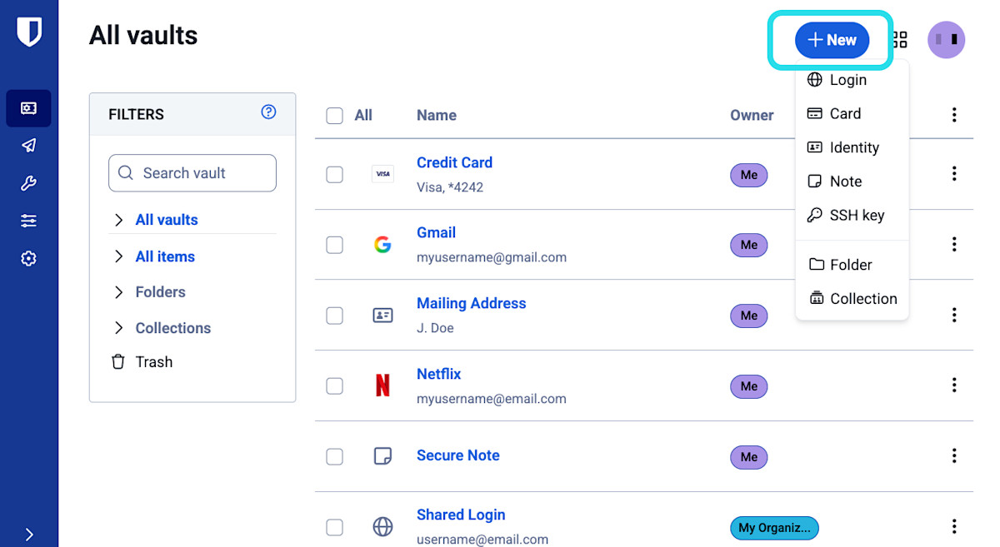
Cliquez sur le bouton Nouveau (New), puis choisissez le type d'élément à créer.
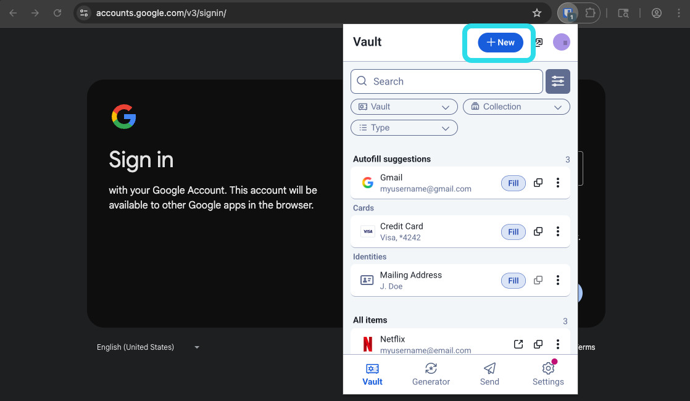
Touchez le bouton Nouveau (New), puis choisissez le type d'élément à créer.
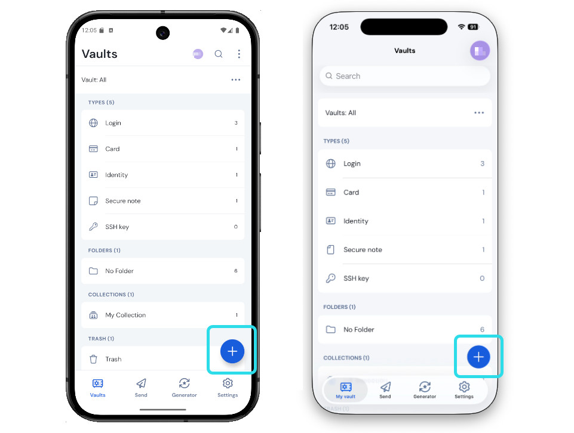
Cliquez sur le bouton Nouveau (New), puis choisissez le type d'élément à créer.
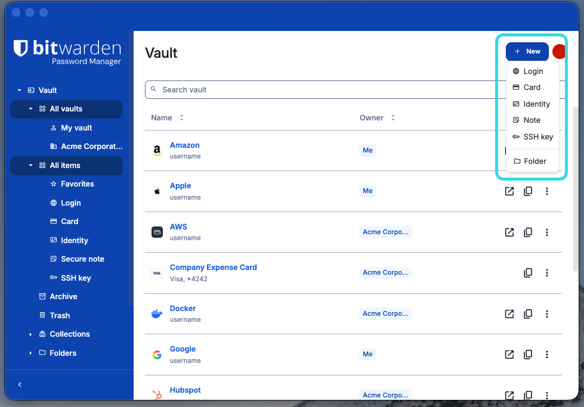
Utilisez la commande create pour ajouter un nouvel élément.
bw create item <données>Consultez la documentation CLI de Bitwarden pour le détail des paramètres.
3 Modifier un élément
Choisissez votre plateforme pour voir comment modifier un élément existant.
Cliquez sur le menu d'options (⋮) de l'élément à modifier.
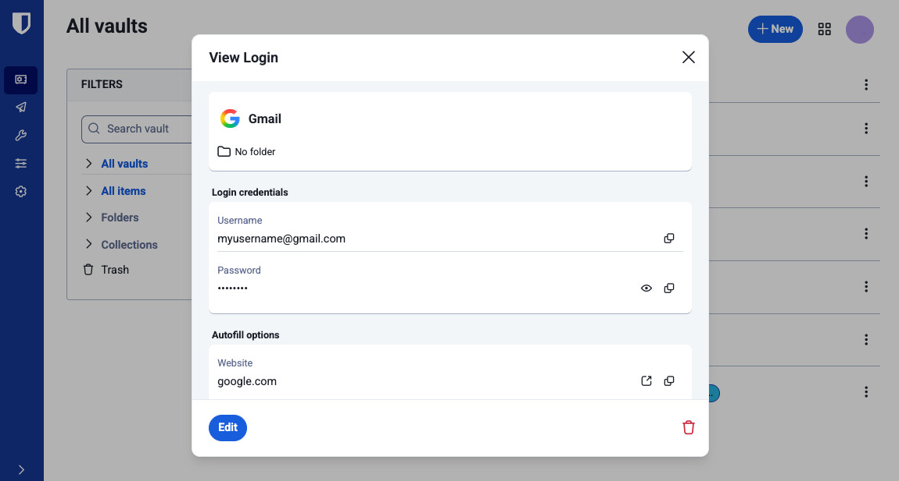
Cliquez sur l'élément pour l'ouvrir, puis sur Modifier (Edit).
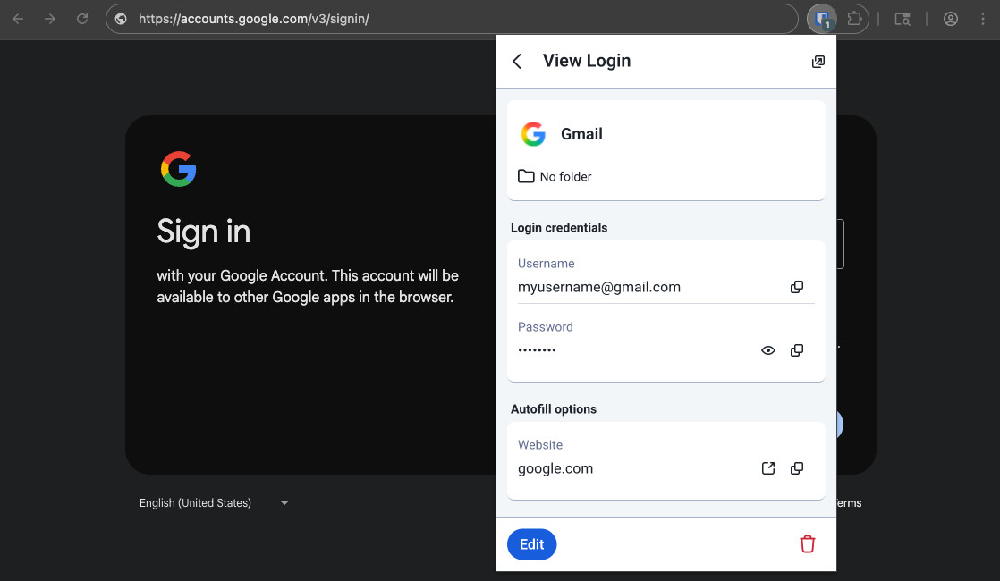
Ouvrez le menu d'options (⋮) de l'élément à modifier, puis touchez Modifier (Edit).
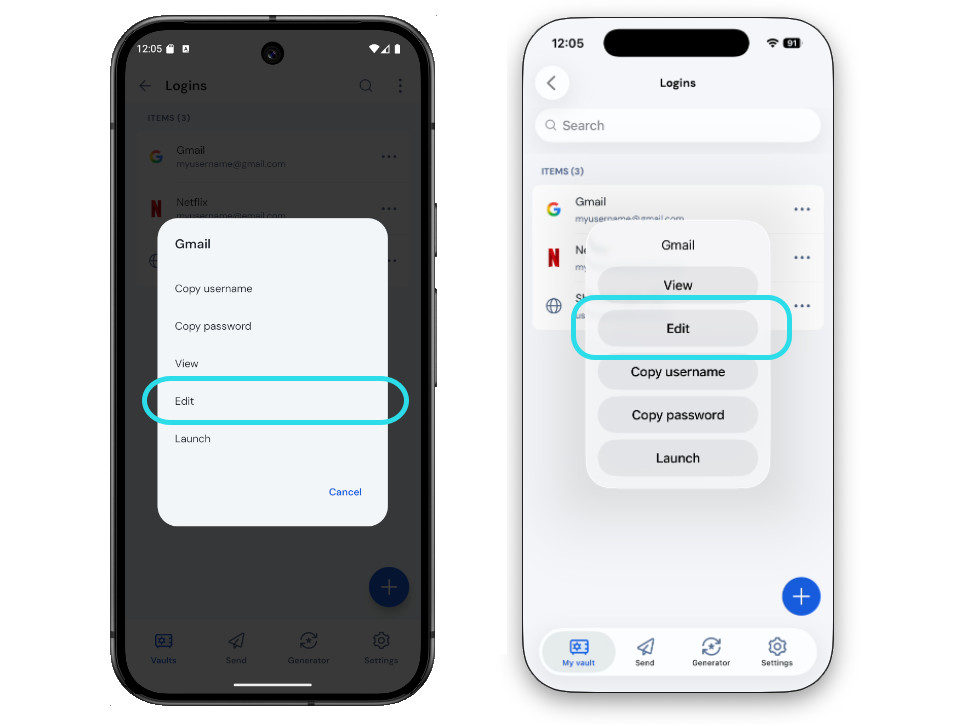
Cliquez sur l'élément pour l'ouvrir, puis sur l'icône Modifier (crayon).
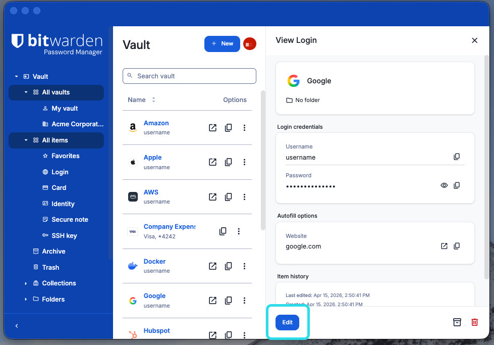
Utilisez la commande edit pour modifier un élément.
bw edit item <item-id> <données>4 Archiver un élément
L'archivage est utile pour désencombrer votre coffre. Les éléments archivés sont exclus des résultats de recherche et des suggestions de remplissage automatique, mais restent inclus dans les exports.
- Fonctionnalité réservée aux abonnements payants (Premium, organisations payantes). Si l'abonnement expire, vous ne perdez pas l'accès aux éléments archivés.
- L'archivage est propre à chaque utilisateur : archiver un élément partagé ne l'archive pas pour les autres personnes qui y ont accès.
- L'archivage ne retire pas les éléments des rapports ni des exports.
- Sélectionnez le ou les éléments à archiver et cliquez sur Archiver (Archive) dans la barre d'actions.
- Confirmez en cliquant sur Archiver dans la fenêtre.
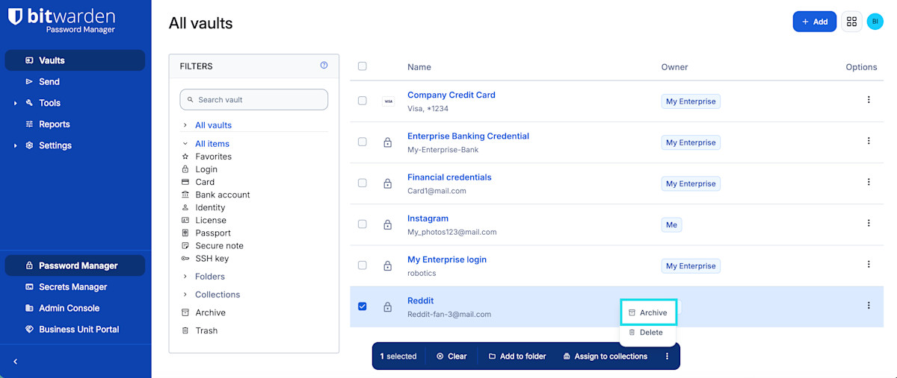
Désarchiver
Sélectionnez Archive dans les filtres du coffre, cochez le ou les éléments à restaurer, puis choisissez Désarchiver (Unarchive) dans la barre d'actions.
- Ouvrez le menu d'options (⋮) de l'élément et choisissez Archiver.
- Confirmez en cliquant sur Archiver dans la fenêtre.
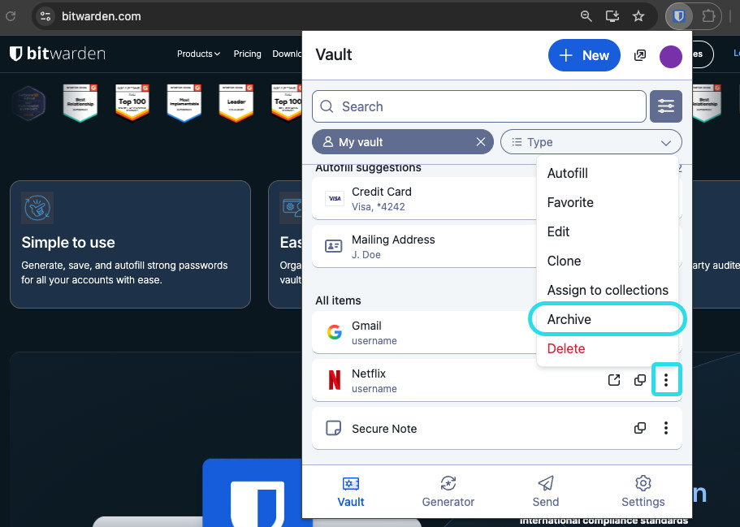
Désarchiver
Allez dans Paramètres → Options du coffre → Archive pour voir vos éléments archivés, puis utilisez le menu d'options (⋮) pour choisir Désarchiver.
Ouvrez le menu d'options (⋮) de l'élément et choisissez Archiver.
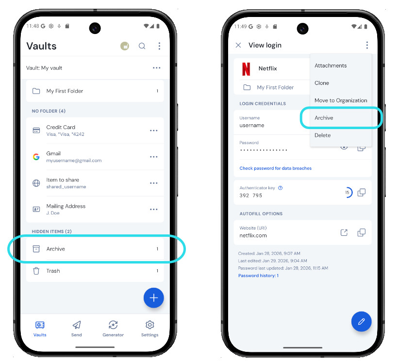
Désarchiver
Sélectionnez Archive dans les filtres du coffre pour voir vos éléments archivés, puis utilisez le menu d'options (⋮) pour choisir Désarchiver.
- Sélectionnez le ou les éléments à archiver, puis cliquez sur Archiver dans la barre d'actions.
- Confirmez en cliquant sur Archiver dans la fenêtre.
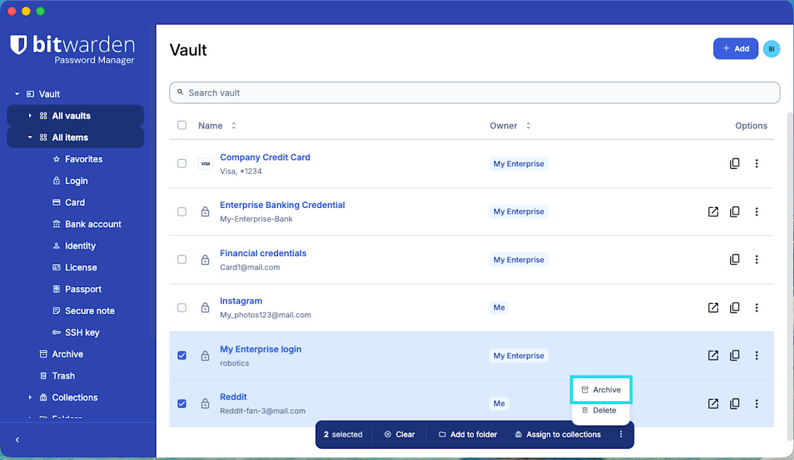
Désarchiver
Sélectionnez Archive dans les filtres du coffre, cochez le ou les éléments à restaurer, puis choisissez Désarchiver dans la barre d'actions.
Pour archiver un élément :
bw archive item <item-id>Pour afficher les éléments archivés :
bw list --archive5 Supprimer un élément
Choisissez votre plateforme pour voir comment supprimer un élément.
Ouvrez le menu d'options (⋮) de l'élément et choisissez Supprimer (Delete). Vous pouvez aussi supprimer plusieurs éléments à la fois via la barre d'actions.
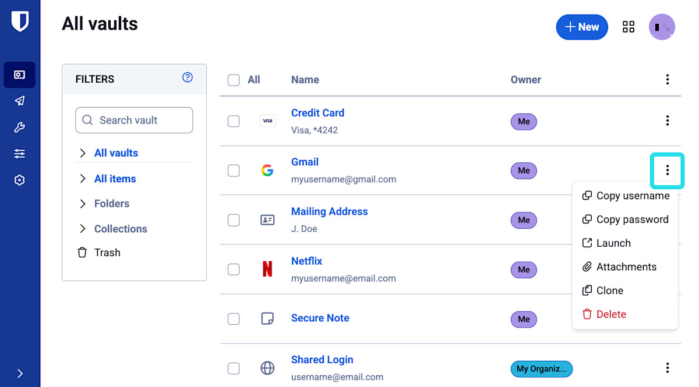
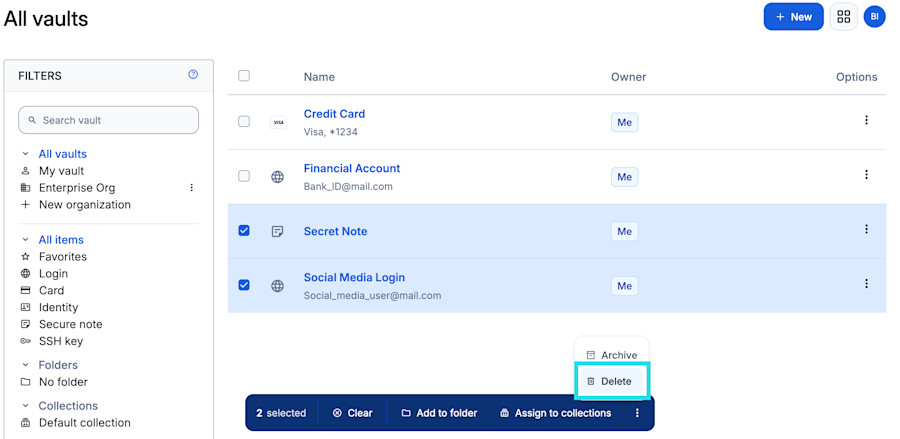
Cliquez sur l'élément pour l'ouvrir, puis sur l'icône Supprimer (corbeille).

Touchez l'élément pour l'ouvrir, puis ouvrez le menu d'options (⋮) et choisissez Supprimer.
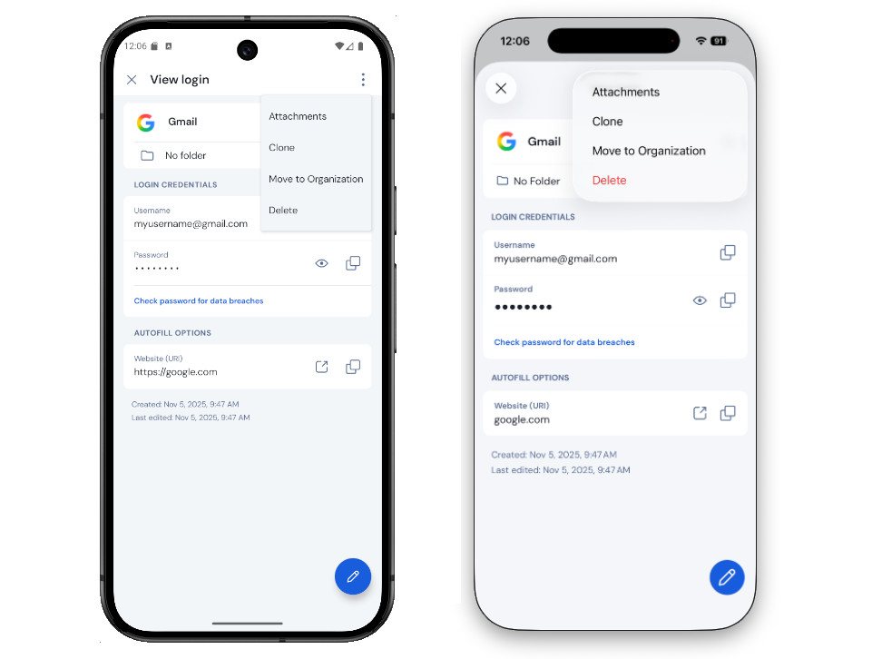
Cliquez sur l'élément pour l'ouvrir, puis sur l'icône Supprimer. Vous pouvez aussi supprimer plusieurs éléments à la fois via la barre d'actions.
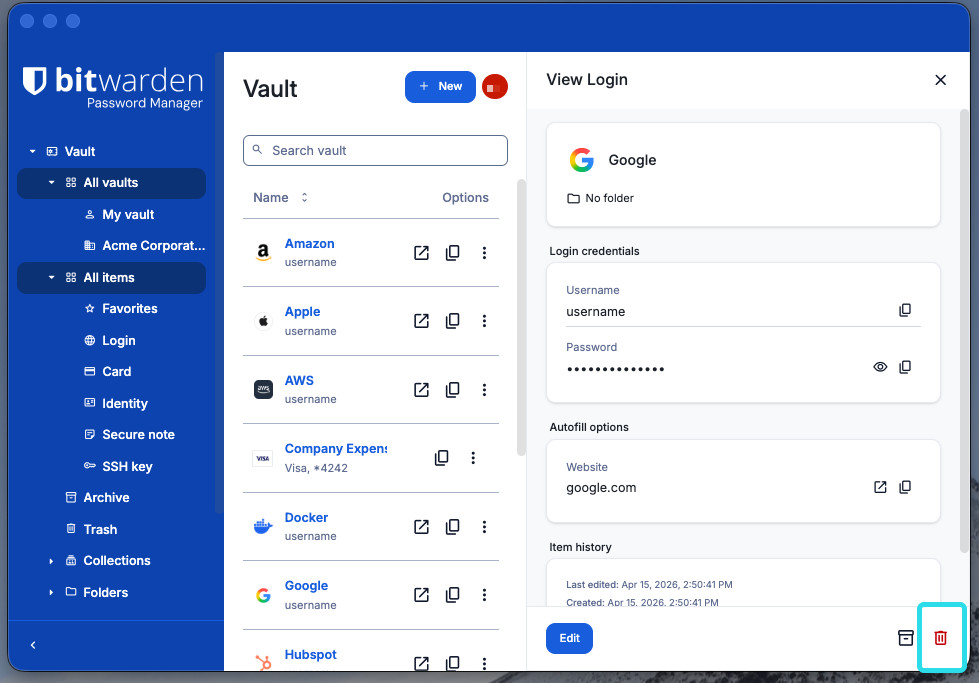
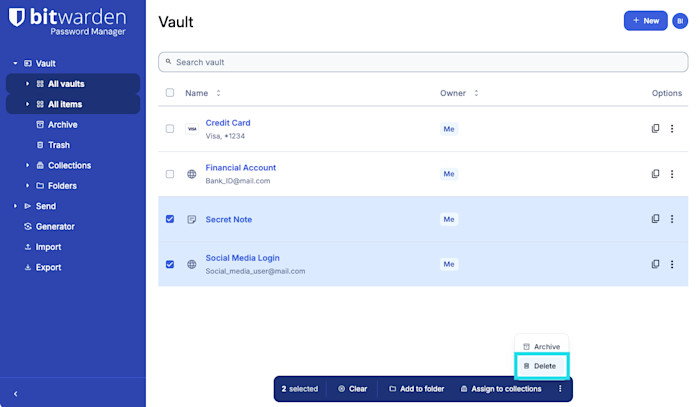
Utilisez la commande delete pour supprimer un élément.
bw delete item <item-id>La corbeille du coffre
Les éléments supprimés sont envoyés dans la corbeille, où ils restent 30 jours. Passé ce délai, ils sont définitivement supprimés et non récupérables. Dans la corbeille, vous pouvez Restaurer un élément ou le Supprimer définitivement avant les 30 jours.
Où trouver la corbeille :
- Application web : sélectionnez Corbeille (Trash) dans le menu Filtres.
- Extension navigateur : Paramètres → Coffre → Corbeille.
- Mobile : onglet Coffres, faites défiler jusqu'à Corbeille.
- Application bureau : sélectionnez Corbeille dans le menu de navigation.
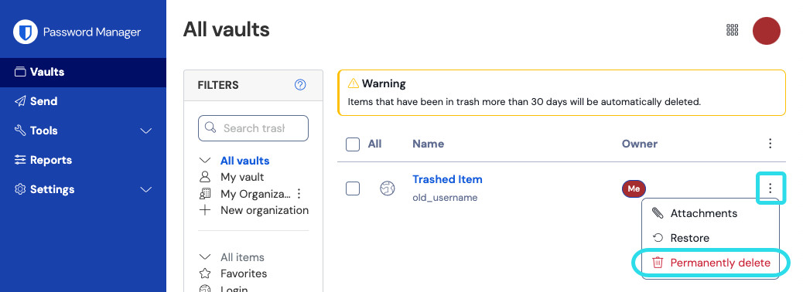
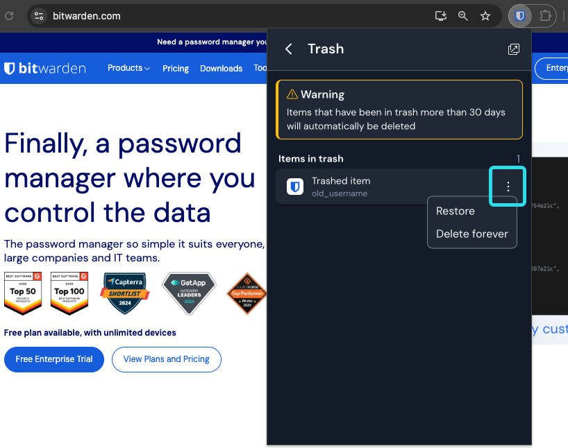
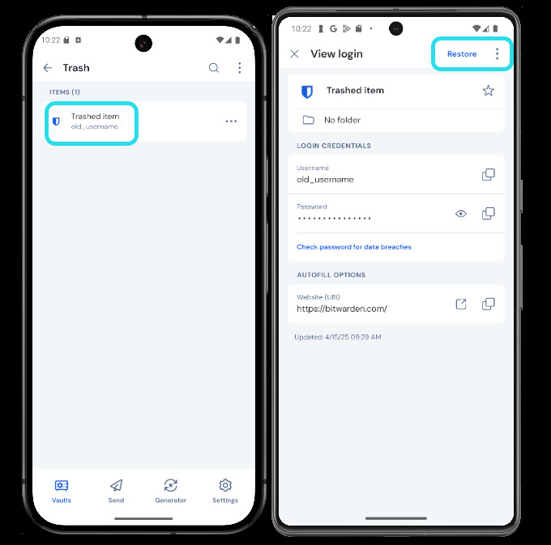
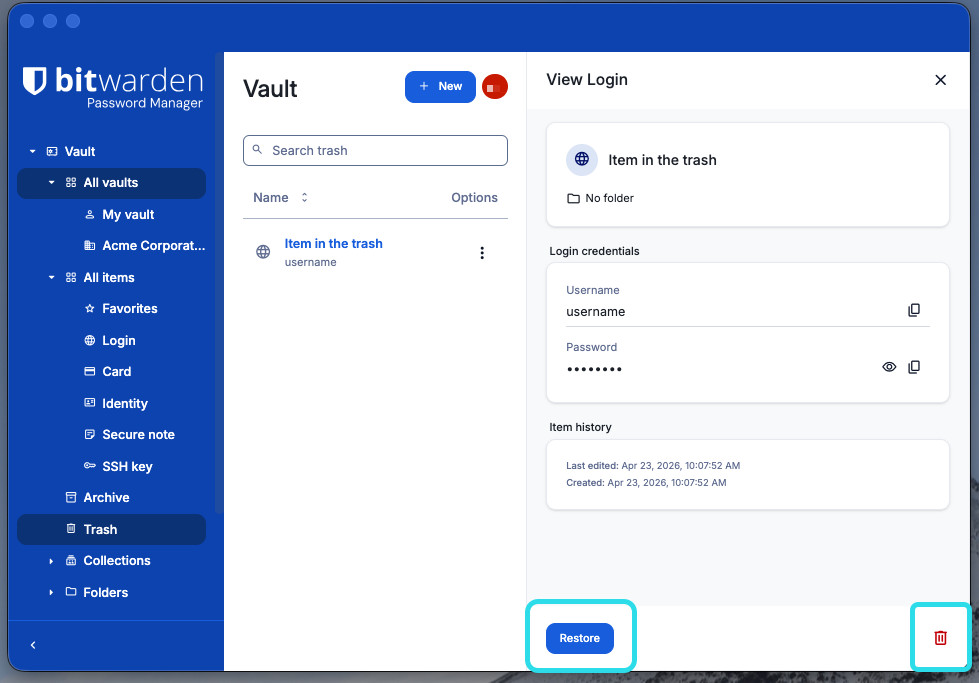
6 Dupliquer (cloner) un élément
Vous pouvez dupliquer n'importe quel élément dont vous êtes propriétaire, pour en créer une copie. Un élément appartenant à une organisation ne peut être cloné que par les membres ayant l'accès « Peut gérer » sur la collection, et uniquement depuis l'application web.
Ouvrez le menu d'options (⋮) de l'élément à dupliquer et choisissez Cloner (Clone).

Ouvrez le menu d'options (⋮) de l'élément à dupliquer et choisissez Cloner (Clone).
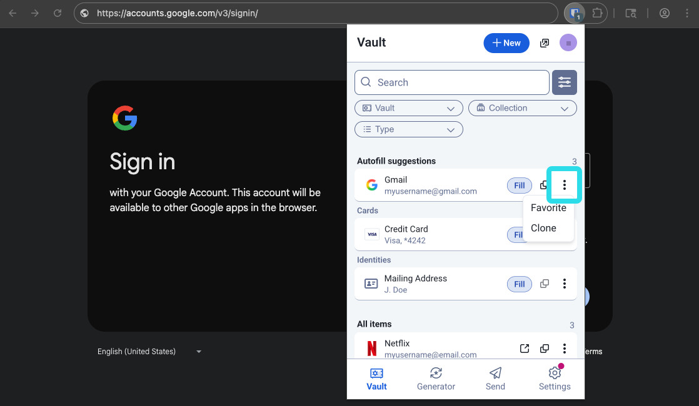
Touchez l'élément pour l'ouvrir, puis ouvrez le menu d'options (⋮) et choisissez Cloner.

Ouvrez le menu d'options (⋮) de l'élément à dupliquer et choisissez Cloner (Clone).
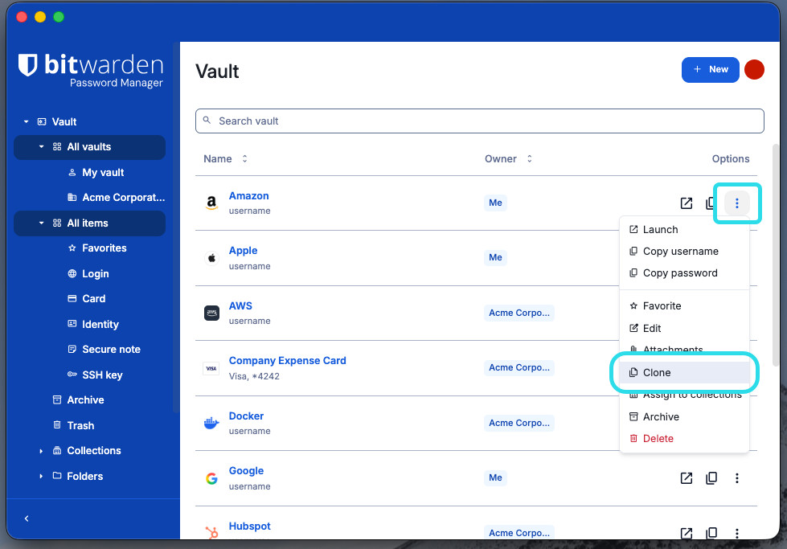
7 Partager un élément
Si vous êtes membre d'une organisation, vous pouvez assigner des éléments de votre coffre aux collections de l'organisation. Cela transfère la propriété de l'élément à l'organisation.
Pour partager avec d'autres membres de l'organisation, sélectionnez le ou les éléments, puis utilisez l'option Assigner aux collections (Assign to collections) dans la barre d'actions.
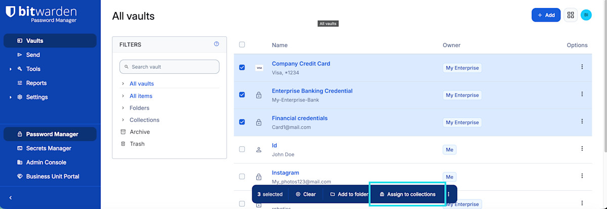
8 Pour aller plus loin
Maintenant que vous maîtrisez les bases, voici quelques pistes utiles :
- Naviguer dans votre coffre grâce à la recherche, aux filtres, aux favoris et aux dossiers.
- Enrichir vos éléments avec des champs personnalisés, des codes de vérification (TOTP) et des pièces jointes.